8 复用模式
2 月 2 日，星期三，15:15
开发团队在拆分领域服务时，开始对如何处理全部共享代码与共享功能产生分歧。Taylen 对 Skyler 处理共享代码的方式很不满，走到她的桌前。
“你到底在干什么？”Taylen 问。
“我在把全部共享代码移到一个新工作区，以便创建共享 DLL。”Skyler 回答。
“一个共享 DLL？”
“我是这么打算的，”Skyler 说，“反正大多数服务都需要这些东西，所以我会建立一个供所有服务使用的 DLL。”
“这是我听过最糟糕的主意，”Taylen 说，“大家都知道，分布式架构应该有多个共享库！”
“我不同意，”Skyler 说，“管理一个共享 DLL 显然比管理几十个容易得多。”
“既然我是这个应用的技术负责人，我要求你把这些功能拆到不同共享库里。”
“好吧，好吧。如果这能让你满意，我可以把全部授权功能移到独立 DLL。”Skyler 说。
“什么？”Taylen 说，“授权代码必须做成共享服务，不是放在共享库里。”
“不，”Skyler 说，“这段代码就应该放在共享 DLL 里。”
“你们那边在吵什么？”Addison 问。
“Taylen 想把授权功能放进共享服务，简直疯了。我认为它应该放进公共共享 DLL。”Skyler 说。
“绝对不行，”Taylen 说，“它必须成为一项独立的共享服务。”
“而且，”Skyler 说，“Taylen 坚持把共享功能放进多个共享库，而不是单一共享库。”
“这样吧，”Addison 说，“我们一起分析共享库粒度的权衡，再比较共享库与共享服务的权衡，看看能不能用更合理、更周全的方式解决这些问题。”
代码复用是软件开发的常态。格式化器、计算器、验证器和审计等公共业务领域功能通常会由多个组件共享；安全、日志和指标收集等公共基础设施功能也是如此。在大多数单体架构中，代码复用很少需要再三思考，只要导入共享类文件或自动注入即可。然而在分布式架构中，如图 图 8.1 所示，共享功能应该怎样处理会让事情复杂起来。
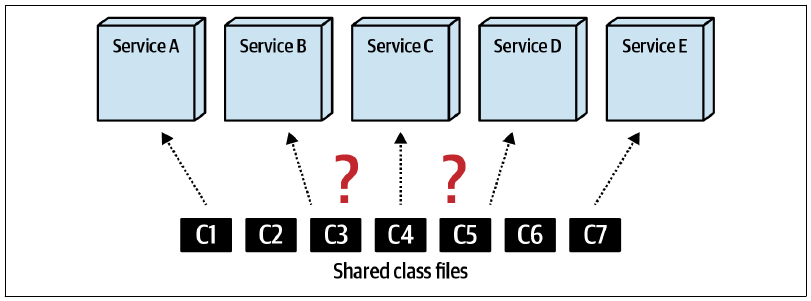
在微服务和无服务器环境等高度分布式架构中，架构师为了减少共享代码，经常高喊“复用就是滥用！”和“什么都不要共享！”。甚至有人用 WET（Write Every Time，每次都写；或 Write Everything Twice，所有东西都写两遍）这个反向缩写，来对抗著名的 DRY 原则（Don’t Repeat Yourself，不要重复自己）。
开发人员确实应该限制分布式架构中的代码复用，但复用仍然是软件开发无法回避的现实，必须妥善处理，尤其是在分布式架构中。本章将介绍几种管理代码复用的技术，包括复制代码、共享库、共享服务，以及服务网格中的边车；同时分析每种方式的优点、缺点与权衡。
8.1 代码复制
代码复制是把共享代码复制到每项服务，更准确地说是每项服务的源代码仓库中，如图 图 8.2 所示，从而完全避免代码共享。
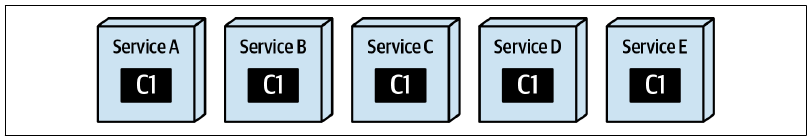
这种做法听起来或许很疯狂，但在微服务早期曾颇为流行。当时人们对限界上下文概念存在大量困惑与误解，因而极力追求“无共享架构”。理论上，代码复制似乎能减少共享；实践中，它很快就暴露了问题。
如今代码复制并不常用，但仍是处理多个分布式服务之间代码复用的一种有效技术。采用时必须极其谨慎，原因显而易见：如果代码中发现缺陷，或者需要进行重要变更，更新所有包含复制代码的服务会非常困难而且耗时。
不过，这项技术有时确实很有用，特别是大多数或全部服务都需要、又高度静态的一次性代码。考虑示例 8-1 的 Java 代码和示例 8-2 中对应的 C# 代码，它们用来标识服务中代表入口点的类，通常就是服务内的 RESTful API 类。
示例 8-1：定义服务入口点注解的源代码（Java）
@Retention(RetentionPolicy.RUNTIME)
@Target(ElementType.TYPE)
public @interface ServiceEntrypoint {}
/* 用法：
@ServiceEntrypoint
public class PaymentServiceAPI {
...
}
*/示例 8-2：定义服务入口点特性的源代码（C#）
[AttributeUsage(AttributeTargets.Class)]
class ServiceEntrypoint : Attribute {}
/* 用法：
[ServiceEntrypoint]
class PaymentServiceAPI {
...
}
*/注意，示例 8-1 的源代码实际上不包含任何功能。这个注解只是一个标记或标签，用来表明某个类代表服务入口点。不过，这种简单注解非常适合承载服务的其他元数据注解，包括服务类型、领域、限界上下文等。关于这些自定义元数据注解，可参阅 Kevlin Henney 与 Trisha Gee 合著的《97 Things Every Java Programmer Should Know》（O’Reilly）第 89 章。
这类源代码很适合复制，因为它是静态的，不含缺陷，将来也很可能不会产生缺陷。如果它是唯一的一次性类，与其专门为它建立共享库，不如把它复制到每项服务的代码仓库中。尽管如此，我们通常仍建议先考察本章介绍的其他代码共享技术，再决定采用代码复制。
复制技术可以保留限界上下文，但代码一旦需要修改，就很难把变更应用到所有副本。表 表格 8.1 列出了这项技术的权衡。
8.1.1 权衡
| 优点 | 缺点 |
|---|---|
| 保留限界上下文 | 难以应用代码变更 |
| 不共享代码 | 服务之间的代码不一致 |
| 服务之间不具备版本控制能力 |
8.1.2 适用场景
如果开发人员拥有简单的静态代码，例如注解、特性或简单公共工具，而且它只是一次性类，或几乎不可能因为缺陷和功能调整而变化，那么复制是一种合适方案。不过，如前所述，在采用代码复制前，仍建议先探索其他复用选择。
从单体架构迁移到分布式架构时，复制有时也适用于公共静态工具类。例如，把 C# 的 Utility.cs 类复制到所有服务后，每项服务都可以按照自身需要删除或增强它，从而移除无用代码，并让工具类针对各自上下文独立演进，类似第 3 章介绍的战术分叉技术。
这项技术的风险依然存在：由于每项服务都有一份代码副本，缺陷修复或代码变更很难传播到所有服务。
8.2 共享库
使用共享库是最常见的代码共享技术之一。共享库是一种外部构件，例如 JAR 或 DLL，其中包含供多项服务使用的源代码，通常在编译时绑定到服务，如图 图 8.3 所示。共享库看起来简单直接，实际上也有自身的复杂性与权衡，其中最突出的是共享库粒度和版本控制。
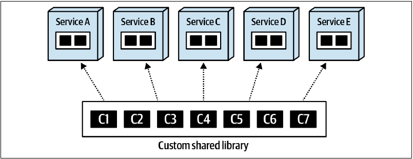
8.2.1 依赖管理与变更控制
与第 7 章讨论的服务粒度类似，共享库的粒度也存在权衡。形成这项权衡的两股相反力量，是依赖管理与变更控制。
考虑图 图 8.4 中的粗粒度共享库。依赖管理相对简单，每项服务都使用同一个共享库；变更控制却并不简单。如果粗粒度共享库中的任何类文件发生变更，由于旧版本最终会被弃用，所有服务无论是否关心这项变更，都必须采用新版本。这样会迫使使用该库的全部服务进行不必要的重新测试与部署，显著扩大一次共享库变更的整体测试范围。
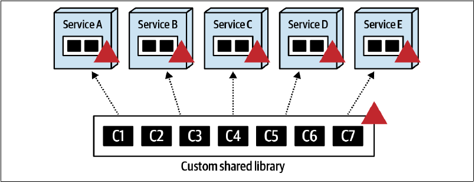
按照功能把共享代码拆成较小的共享库，例如安全、格式化器、注解和计算器，更有利于变更控制与整体可维护性，却会把依赖管理变成一团乱麻。如图 图 8.5 所示，共享类 C7 的变更只影响服务 D 和 E，但共享库与服务之间的依赖矩阵会迅速变成一大团“分布式泥球”，也就是某些人所说的分布式单体。
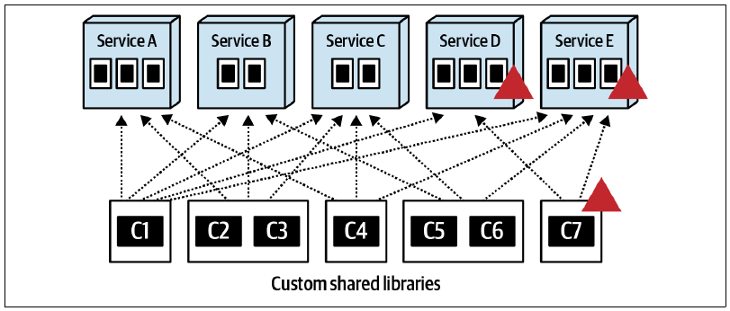
系统只有少数服务时，共享库粒度的选择可能影响不大；但随着服务数量增加，变更控制与依赖管理问题也会增长。设想一个拥有 200 项服务和 40 个共享库的系统，它很快就会复杂到难以维护。
鉴于变更控制与依赖管理之间的权衡，我们通常建议避免大型粗粒度共享库，尽可能采用较小、按功能划分的库，也就是优先照顾变更控制，而不是依赖管理。例如，把格式化器以及安全（身份认证与授权）等相对静态的功能拆到各自共享库中，可以隔离静态代码，减少其他共享功能的测试范围，也能避免因版本弃用而产生无谓部署。
8.2.2 版本控制策略
对共享库版本控制的一般建议非常明确：始终使用版本控制！共享库版本控制不仅提供向后兼容，也能提供高度敏捷性，即快速响应变化的能力。
假设一个名为 Validation.jar 的共享库包含公共字段验证规则，由 10 项服务使用，其中一项服务急需修改一条验证规则。只要对 Validation.jar 进行版本控制，需要变更的服务就能立刻采用新版本并马上部署到生产环境，不影响另外 9 项服务。若没有版本控制，修改共享库时必须测试并重新部署全部 10 项服务，增加时间成本与协调工作，降低敏捷性。
这个建议看起来理所当然，但版本控制也有权衡与隐藏的复杂性。事实上，它可能复杂到让本书作者常常把它称为分布式计算第九谬误：“版本控制很简单。”
共享库版本控制的第一项复杂性，是传达版本变更。在拥有多个团队的高度分布式架构中，很难把共享库版本变化传达清楚。其他团队怎样知道 Validation.jar 刚刚升级到 1.5？变更了什么？影响哪些服务？又影响哪些团队？即使已有 JFrog Artifactory 等大量工具管理共享库、版本与变更文档，仍然必须在正确时间把版本变化协调并传达给正确的人。
另一项复杂性，是弃用共享库的旧版本，也就是在某个日期后移除不再支持的版本。弃用策略可以针对每个共享库单独定制，也可以全局应用于所有共享库；不出所料，两种方式都有权衡。
通常，更合适的做法是为每个共享库制定单独的弃用策略，因为不同库的变化速率不同。例如，Security.jar 很少变化，只保留两三个版本是合理策略；但如果 Calculators.jar 每周变化，只保留两三个版本就意味着使用它的全部服务每月甚至每周都要采用新版本，造成大量无谓的重复测试与部署。由于变化频繁，为 Calculators.jar 保留 10 个版本会合理得多。
不过，定制策略也意味着必须有人维护并跟踪每个共享库的弃用情况。这有时是一项艰巨任务，绝非胆小者能够胜任。
不同共享库变化不一，因此全局弃用策略虽然简单，效果却较差。它规定无论变化速率如何，所有共享库都只能支持固定数量的向后版本，例如四个。这样很容易维护和治理，却可能造成显著的反复折腾：为了与频繁变化的共享库保持兼容，服务不得不持续重新测试、重新部署。这会把团队逼疯，并显著降低整体速度与生产力。
无论采用哪种弃用策略，只要共享代码出现严重缺陷或破坏性变更，任何策略都会失效，全部服务都必须同时或在极短时间内采用共享库的最新版本。这也是我们建议在适当范围内保持共享库细粒度，避免建立包含系统全部共享功能的粗粒度 SharedStuff.jar 的另一个理由。
关于版本控制还有最后一项建议：服务指定所需库版本时，不要使用 LATEST。根据我们的经验，使用 LATEST 的服务在进行快速修复或紧急生产热部署时容易遇到问题，因为最新版本中的某些内容可能与服务不兼容，团队必须投入额外开发与测试工作才能发布。
共享库允许变更版本化，因此能为共享代码变更提供较好的敏捷性；但依赖管理可能困难而混乱。表 表格 8.2 列出了这项技术的权衡。
8.2.3 权衡
| 优点 | 缺点 |
|---|---|
| 能够对变更进行版本控制 | 依赖可能很难管理 |
| 共享代码在编译时绑定，减少运行时错误 | 异构代码库中会出现代码重复 |
| 共享代码变更具有良好敏捷性 | 版本弃用可能很困难 |
| 版本沟通可能很困难 |
8.2.4 适用场景
共享库适合共享代码变化较少或适中的同构环境。进行版本控制虽然有时很复杂，却能在共享代码变更时提供良好敏捷性。
共享库通常在编译时绑定到服务，因此性能、可扩展性和容错能力等运行特性不会受到影响。借助版本控制，公共代码变更破坏其他服务的风险也较低。
8.3 共享服务
公共功能除了使用共享库，最主要的替代方案就是共享服务。图 图 8.6 所示的共享服务技术把共享功能放在一项独立部署的服务中，避免在代码层复用。
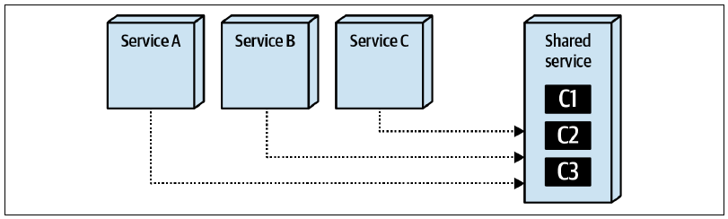
共享服务技术的一项显著特点，是共享代码必须采用组合形式，而不能采用继承。从源代码设计角度看，组合优于继承一直存在许多争论，可参考 Thoughtworks 的《Composition vs. Inheritance: How to Choose》和 Martin Fowler 的《Designed Inheritance》。从架构角度看，选择代码复用技术时，组合与继承之间的区别很重要，尤其是在共享服务方案中。
过去，共享服务是分布式架构处理共享功能的常见方式。共享功能发生变化时，不再需要重新部署其他服务；变更被隔离在独立服务中，可以单独部署，而不必重新部署需要这项共享功能的服务。不过，与软件架构中的一切一样，共享服务也伴随许多权衡，包括变更风险、性能、可扩展性和容错能力。
8.3.1 变更风险
使用共享服务来改变共享功能是一把双刃剑。如图 图 8.7 所示，只需修改独立服务中的共享代码，例如折扣计算器，再重新部署这项服务，变更就能立即供所有服务使用，而不需要重新测试和部署其他依赖它的服务。
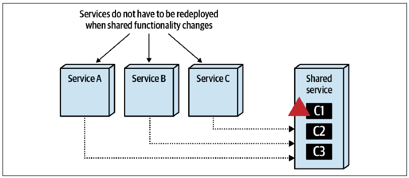
如果生活真有这么简单就好了！问题在于，共享服务的变化属于运行期变更，不像共享库那样属于编译期变更。结果，一项共享服务中的“简单”变更可能让整个系统停摆，如图 图 8.8 所示。
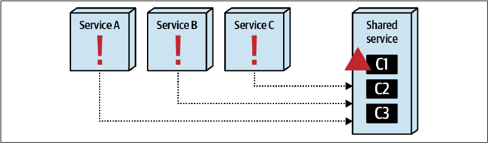
这必然把版本控制问题推到眼前。共享库通过编译时绑定来管理版本，显著降低库变更的风险；但一项简单共享服务变更应该怎样进行版本控制？
最直接的回答当然是 API 端点版本控制，也就是每次共享服务发生变更，都创建一个包含新版本的端点，如示例 8-3 所示。
示例 8-3：共享服务端点采用版本控制的折扣计算器
app/1.0/discountcalc?orderid=123
app/1.1/discountcalc?orderid=123
app/1.2/discountcalc?orderid=123
app/1.3/discountcalc?orderid=123
最新变更 -> app/1.4/discountcalc?orderid=123采用这种方式，每次共享服务变化，团队都要创建包含新版 URI 的 API 端点。它的问题不难发现。首先，访问折扣计算器服务的其他服务，或每项服务的相关配置，都必须改变并指向正确版本。其次，团队应该何时创建新端点？仅仅修改一条错误消息时呢？增加一种新计算时呢？版本控制在这里会变得非常主观，而使用共享服务的服务仍然必须改变，才能指向正确端点。
API 端点版本控制还有另一个问题：它假设所有共享服务访问都通过网关的 RESTful API 调用，或点对点通信完成。然而，除了 RESTful API，服务间通信有时还会使用消息和 gRPC 等其他协议。这进一步增加了变更版本策略的复杂度，很难跨多种协议协调版本。
归根结底，在共享服务技术中，共享服务的变更通常发生在运行期，因此风险比共享库大得多。版本控制虽然有助于降低风险，但应用与管理也比共享库复杂得多。
8.3.2 性能
需要共享功能的服务必须对共享服务进行服务间调用，因此网络延迟会损害性能；如果共享服务端点受到保护，还会增加安全延迟。图 图 8.9 展示了这项权衡，而共享库在访问共享代码时不存在这个问题。
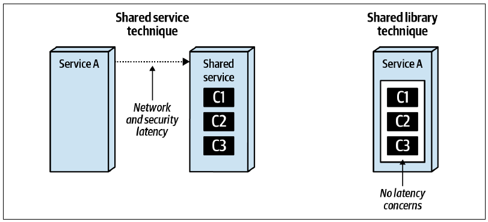
gRPC 能显著减少网络延迟，从而缓解部分性能问题；消息等异步协议也可以发挥类似作用。采用消息时，需要共享功能的服务可以通过请求队列发出请求，继续执行其他工作，等需要结果时，再使用关联 ID 从独立回复队列中取得。关于消息技术的更多信息，可参阅 Mark Richards 等人合著的《Java Message Service, Second Edition》（O’Reilly）。
8.3.3 可扩展性
共享服务技术的另一项缺点是：随着使用方服务扩展，共享服务也必须随之扩展。当多项服务同时访问同一项共享服务时，管理有时会非常混乱。图 图 8.10 同时表明，共享库不存在这个问题，因为共享功能已在编译时包含在服务内部。
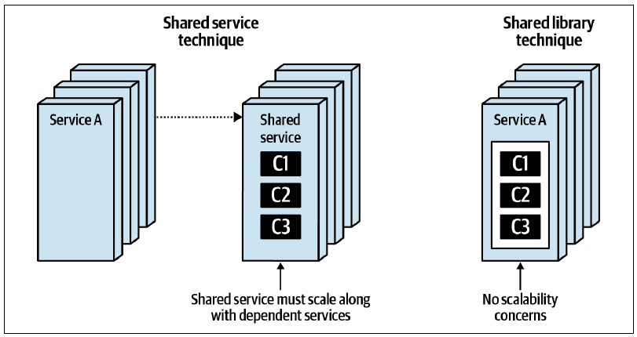
8.3.4 容错能力
增加服务实例通常可以缓解容错问题，但使用共享服务时，这仍是一项必须考虑的权衡。如图 图 8.11 所示，如果共享服务不可用，需要其功能的服务也会停止运行，直至共享服务恢复。共享库不存在这一问题，因为共享功能在编译时已包含在服务中，可以通过普通方法或函数调用访问。
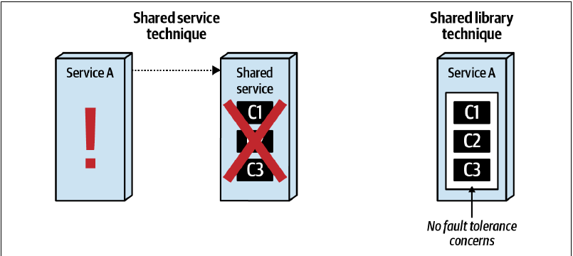
共享服务能够保留限界上下文，也适合频繁变化的共享代码，但性能、可扩展性和可用性等运行特性会受到损害。表 表格 8.3 列出了它的权衡。
8.3.5 权衡
| 优点 | 缺点 |
|---|---|
| 适合高代码易变性 | 变更的版本控制可能很困难 |
| 异构代码库中不重复代码 | 延迟会损害性能 |
| 保留限界上下文 | 服务依赖会造成容错与可用性问题 |
| 不进行静态代码共享 | 服务依赖会造成可扩展性与吞吐量问题 |
| 运行期变更会增加风险 |
8.3.6 适用场景
共享服务适合高度多语言环境，也就是包含多种异构语言和平台的环境；当共享功能经常变化时也很合适。共享服务变更的整体敏捷性通常高于共享库，但要警惕运行期副作用，以及依赖共享功能的服务所承担的风险。
8.4 边车与服务网格
架构师对任何问题最常见的回答大概都是：“视情况而定！”在分布式架构中，没有什么比运行耦合更能体现这种模糊性。
微服务架构的设计目标之一是高度解耦，常见建议是“重复优于耦合”。假设两项 Sysops Squad 服务需要传递客户信息，但领域驱动设计的限界上下文要求实现细节对服务保持私有。常见方案是让每项服务拥有自己的 Customer 等实体内部表示，再通过 JSON 名称-值对等松耦合方式传递信息。这样，每项服务都可以随意改变内部表示，包括技术栈，而不会破坏集成。
架构师通常不喜欢重复代码，因为它会造成同步问题、语义漂移以及许多其他麻烦；但有时，耦合的危害比重复更大，微服务往往就是如此。因此，在微服务架构中，对“应该复制某项能力，还是与它耦合？”这个问题，答案很可能是复制；在基于服务的架构等其他风格中，正确答案却可能是耦合。视情况而定！
设计微服务时，为了保持解耦，架构师已经接受实现重复这一现实。但那些适合高度耦合的能力呢？例如监控、日志、身份认证与授权、断路器等每项服务都应该具备的公共运行能力。如果任由每个团队自行管理这些依赖，局面常常会陷入混乱。
例如，Penultimate Electronics 想统一使用一种监控方案，方便运维各种服务。但如果每个团队负责为自己的服务实现监控，运维团队如何确认他们确实做了？统一升级又怎么办？如果监控工具需要在整个组织内升级，各团队怎样协调？
近几年，微服务生态系统形成了一种优雅的通用解决方案：边车模式。它基于 Alistair Cockburn 更早提出的六边形架构模式，如图 图 8.12 所示。
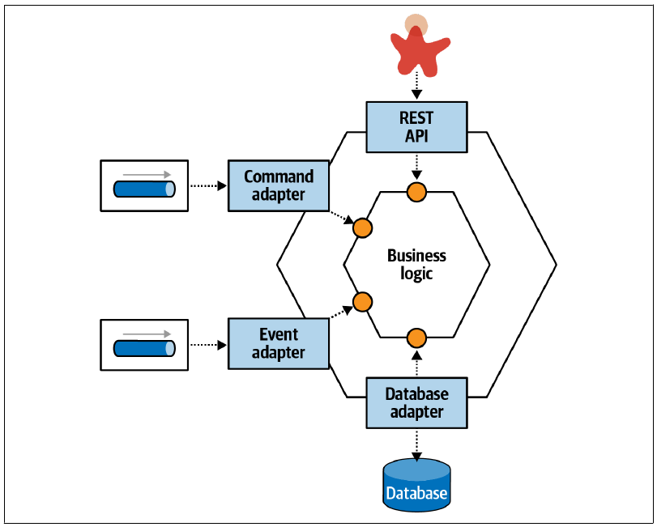
在六边形模式中，今天所谓的领域逻辑位于六边形中央，周围通过端口与适配器连接生态系统的其他部分，因此它也称为“端口与适配器模式”。这项模式比微服务早很多年，却与现代微服务存在相似之处，只有一个显著差异：数据保真度。六边形架构把数据库视为另一个可插拔适配器，而 DDD 的一项洞见认为，数据模式和事务性应位于内部，微服务也是如此。
边车模式沿用了六边形架构的概念，把领域逻辑与技术（基础设施）逻辑解耦。考虑图 图 8.13 所示的两项微服务。
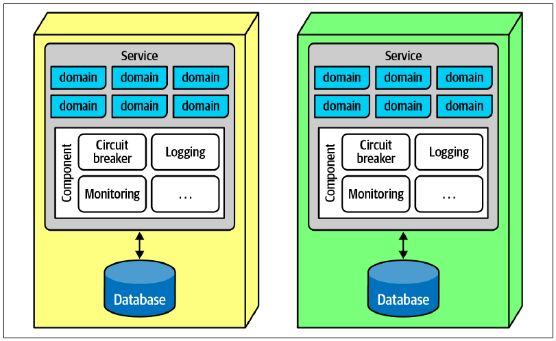
每项服务都分成运行关注点与领域关注点：运行关注点是服务底部较大的组件，领域关注点则是顶部标有“domain”的方框。如果架构师希望运行能力保持一致，可以把可分离部分放进边车组件。“边车”这个比喻来自摩托车旁挂的边车；其实现可以由多个团队共同负责，也可以交给中央基础设施团队管理。
如果可以假设每项服务都包含边车，它就能在所有服务之间形成一致的运行接口，通常通过图 图 8.14 所示的服务平面连接。
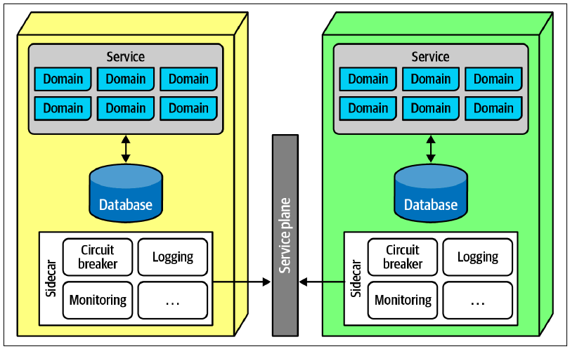
如果架构师和运维团队能够可靠地假设每项服务都包含边车组件，并用适应度函数治理，就会形成图 图 8.15 所示的服务网格。每项服务右侧的方框彼此连接，形成一张“网”。借助服务网格，架构师和 DevOps 可以创建仪表板、控制扩展等运行特性，并实现许多其他能力。
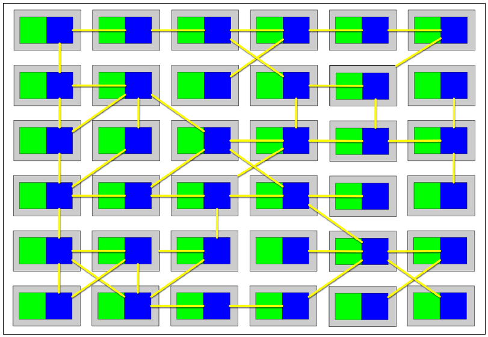
微服务的一项优势，是依赖集成而不是公共平台，因此团队可以针对每项服务选择适当的复杂度与能力。边车模式让企业架构师等治理团队能够合理约束过度多语言化的环境。随着平台数量增长，统一治理会越来越困难。因此，团队经常利用服务网格的一致性，跨多个异构平台支持基础设施和其他横切关注点。例如，如果企业架构师希望统一监控方案而系统没有服务网格，团队就必须为每种平台构建支持该方案的边车。
边车模式不仅能把运行能力与领域解耦，它还是一种处理特定耦合的正交复用模式。架构解决方案通常需要多种耦合，例如当前例子中的领域耦合与运行耦合。正交复用模式允许沿着与架构中一条或多条接缝相反的方向复用某个方面。微服务按领域组织，但运行耦合必须横跨这些领域；边车使架构师可以把这些关注点隔离到横切整个架构、但保持一致的一层中。
8.4.1 正交耦合
在数学中，两条直线以直角相交时称为正交，也意味着彼此独立。在软件架构中，架构的两个部分也可能正交耦合：两者目的不同，却必须相交才能形成完整方案。本章最明显的例子是监控等运行关注点，它不可或缺，却独立于目录结算等领域行为。识别正交耦合，可以帮助架构师找到关注点之间纠缠最少的交点。
与所有架构方案一样，边车模式也有权衡，如表 表格 8.4 所示。
8.4.2 权衡
| 优点 | 缺点 |
|---|---|
| 提供一致方式建立隔离耦合 | 每种平台都必须实现一套边车 |
| 支持一致的基础设施协调 | 边车组件可能变得庞大或复杂 |
| 可以由各团队、中央团队或两者结合负责 |
8.4.3 适用场景
边车模式和服务网格提供了一种简洁方式，把某类横切关注点传播到分布式架构各处；它们的用途并不限于运行耦合，第 14 章还会展示其他应用。这相当于“四人帮”《Design Patterns》（Addison-Wesley）中装饰器设计模式的架构版本：架构师可以独立于常规连接方式，为整个分布式架构“装饰”行为。
8.5 Sysops Squad 案例：公共基础设施逻辑
2 月 10 日，星期四，10:34
一个雾蒙蒙的早晨，Sydney 探头看进 Taylen 的办公室：“嘿，你在使用共享的 Message Dispatch 库吗？”
“是的，”Taylen 回答，“我们正尝试统一使用它，让消息解析更一致。”
“好，但现在出现了重复日志，”Sydney 说，“看起来库会写日志，我们的服务也会写。应该这样吗？”
“不，”Taylen 说，“我们肯定不希望日志条目重复，那只会让一切更混乱。应该问问 Addison。”
于是，Sydney 和 Taylen 出现在 Addison 门口。“嘿，有时间吗？”
“你们来总有时间。怎么了？”Addison 回答。
“我们一直在把许多重复代码合并到共享库中，效果很好，也越来越善于找出那些很少变化的部分，”Sydney 说，“但现在遇到了这个问题：到底应该由谁写日志？库、服务，还是其他东西？怎样才能保持一致？”
“这碰到了共享运行行为，”Addison 说，“日志只是其中一种。监控、服务发现、断路器，甚至有些工具函数又怎么办？比如几个团队共享的 JSON-to-XML 库。我们需要更好的处理方式，避免出问题。因此我们正在实现服务网格，把这些公共行为放进边车组件。”
“我读过边车和服务网格，”Sydney 说，“就是在一大批微服务之间共享东西，对吗？”
“大致如此，但不是任何东西都可以，”Addison 说，“服务网格和边车的目的是合并运行耦合，而不是领域耦合。就像我们现在的场景，我们希望所有服务的日志与监控保持一致，又不希望每个团队都操心。如果把日志代码合并到每项服务都会实现的公共边车中，就能强制保持一致。”
“共享库由谁负责？”Taylen 问，“所有团队共同负责吗？”
“我们考虑过，但现在团队已经很多，因此组建了共享基础设施团队来管理和维护边车组件，”Addison 回答，“他们还建立了部署流水线，在边车绑定到服务后，使用一组适应度函数自动测试。”
“那么，如果需要在服务间共享库，就让他们把它放进边车？”Sydney 问。
“要小心，边车不能拿来装任何东西，它只用于运行耦合。”Addison 说。
“我不太明白这个区别。”Taylen 说。
“运行耦合包括我们讨论过的日志、监控、服务发现、身份认证与授权等。基本上，它涵盖基础设施中那些不承担领域职责的管道部分。但绝不能把 Address 或 Customer 类等领域共享组件放进边车。”
“为什么？”Sydney 问，“如果两项服务需要同一个类定义，把它放进边车不是可以同时提供给两者吗？”
“可以，但这恰恰增加了微服务努力避免的耦合，”Addison 回答，“在大多数架构中，一项服务的单一实现会由需要它的团队共享；但在微服务中，这会形成耦合点，以不理想的方式把多项服务绑在一起。一个团队修改共享代码，所有团队都必须协调变更。”
“不过，架构师也可能决定把共享库放进边车，毕竟它是一项技术能力。没有哪个答案绝对正确，因此这是架构决策，值得进行权衡分析。比如 Address 类改变，而两项服务都依赖它，两项服务就都必须改变，这正是耦合的定义。我们会用契约处理这些问题。”
“另一个问题是大小：不能让边车变成架构中最大的部分。以前讨论的 JSON-to-XML 库有多少团队使用？”
“凡是需要与大型机系统集成的团队都会用，”Taylen 说，“大概 16 或 17 个团队中的 5 个？”
“很好。那么，把 JSON-to-XML 放进边车的权衡是什么？”Addison 问。
“这样每个团队都会自动获得这个库，不必自己配置依赖。”Sydney 回答。
“坏处呢？”Addison 问。
“会让边车变大，但不会大太多，它只是个小库。”Sydney 说。
“这就是共享工具代码的关键权衡：有多少团队需要它，以及它给每项服务，特别是不需要它的服务，增加多少开销。”
“如果使用它的团队不到一半，增加这项开销可能不值得。”Sydney 说。
“没错！所以目前不把它放进边车，将来再重新评估。”Addison 说。
背景
微服务架构中的每项服务都需要公共而一致的运行行为；如果把责任留给各个团队，会产生不一致与协调问题。
决策
我们将结合边车组件与服务网格，合并共享运行耦合。
共享基础设施团队负责拥有和维护供服务团队使用的边车，服务团队是他们的客户。边车将提供以下能力：
- 监控
- 日志
- 服务发现
- 身份认证
- 授权
后果
团队不应把领域类加入边车，以免形成不恰当的耦合。
如果有足够多团队需要某个共享运行库，各团队应与共享基础设施团队合作，把它放入边车。
8.6 代码复用：何时产生价值？
架构师遇到某些情境时，经常无法恰当评估权衡。这不一定是能力不足，因为许多权衡只有事后才会变得明显。
复用是最常被滥用的抽象之一。组织普遍认为复用是值得赞扬、团队应该努力追求的目标；但如果没有评估与复用相关的全部权衡，架构就可能出现严重问题。
20 世纪早期，由协调驱动的面向服务架构曾形成一股趋势，许多组织的主要目标之一是最大化复用。过度复用的危险，正是很多架构师从那段经历中学到的教训。考虑图 图 8.16 所示的一家保险公司。
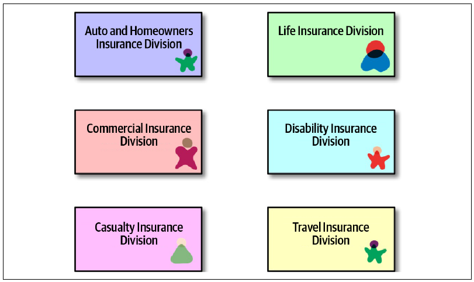
公司每个部门都关心客户的某个方面。多年前，架构师被要求留意这类共性；一旦发现，就要把组织中的客户视图合并进图 图 8.17 所示的单一服务。
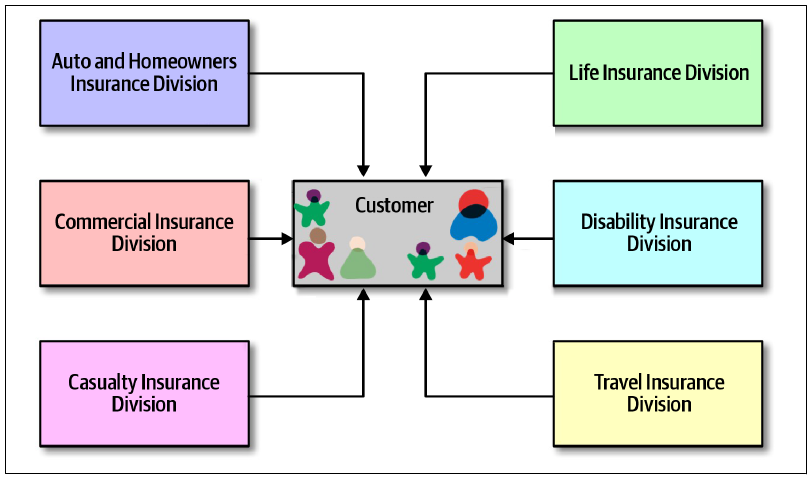
图 图 8.17 看起来或许很合乎逻辑，但从架构角度看却是一场灾难，原因有两个。首先，如果 Customer 这样的关键实体的全部组织信息都必须放在一个地方，它就必须复杂到足以应对所有领域与场景，结果反而很难用于简单事务。
其次，它会使架构变得脆弱。如果每个需要客户信息的领域都必须从同一个地方取得，那么这个地方一变，所有部分都会损坏。在本例中，如果 CustomerService 需要代表某个领域增加新能力，会怎样？这项变更可能影响所有其他领域，需要协调并测试，确保变化没有在整个架构中形成“涟漪”。
架构师没有意识到，复用有两个重要方面。他们正确掌握了第一个：抽象。架构师和开发人员通过抽象寻找复用候选项；但决定复用实用性与价值的是第二个方面：变化速率。
既然某些复用会造成脆弱性，它与那些显然使我们受益的复用有什么不同？想想人人都成功复用的东西：操作系统、开源框架和库等。它们与项目团队自行构建的资产有何区别？答案是变化缓慢。操作系统与外部框架等技术耦合能够带来收益，是因为它们的变化速率和更新节奏容易理解。内部领域能力或快速变化的技术框架，都是糟糕的耦合目标。
复用源自抽象，却依靠缓慢的变化速率实现。
8.6.1 通过平台复用
大量文章都在赞美组织内平台的价值，几乎已经造成语义泛化。不过，大多数人都同意：平台是组织内新的复用目标。也就是说，组织会为每项可区分的领域能力建立平台，并用定义良好的 API 隐藏实现细节。
这种思路仍由缓慢的变化速率驱动。正如第 13 章会讨论的，API 可以设计成与调用方非常松耦合，因此内部实现细节可以快速变化，而不会破坏 API。当然，这无法保护组织免受跨领域传递信息的语义变化影响；但通过仔细设计封装与契约，架构师可以限制破坏性变更与集成架构脆弱性的范围。
8.7 Sysops Squad 案例：共享领域功能
2 月 8 日，星期二，12:50
在 Addison 批准后，开发团队决定把核心工单功能拆成三项独立服务：面向客户的“工单创建服务”“工单分配服务”和“工单完成服务”。不过，三项服务都使用公共数据库逻辑（查询与更新），并共享工单数据领域中的一组数据表。
Taylen 想创建一项包含公共数据库逻辑的共享数据服务，从而形成图 图 8.18 所示的数据库抽象层。
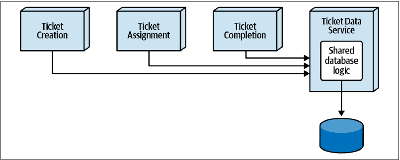
Skyler 非常讨厌这个主意，希望改用图 图 8.19 所示的单一共享库（DLL），让每项服务在构建和部署时把它包含进来。两人找 Addison 帮忙解决僵局。
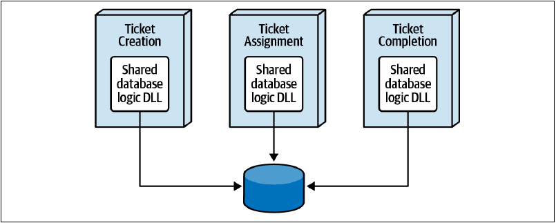
“Addison，你的意见是什么？共享数据库逻辑应该放进共享数据服务，还是共享库？”Taylen 问。
“这不是意见问题，”Addison 说，“我们要分析权衡，为核心工单共享数据库功能找出最合适的方案。采用基于假设的方法，先假设最合适的方案是共享数据服务。”
“等一下，”Skyler 说，“这根本不是解决问题的良好架构方案。”
“为什么？”Addison 问，促使 Skyler 开始从权衡角度思考。
“首先，每次数据库查询或更新，三项服务都必须调用共享数据服务，性能会受到严重影响。其次，如果共享数据服务停机，三项服务就全都无法运行。”Skyler 说。
“那又怎样？”Taylen 说，“都是后端功能，谁在乎？后端不必那么快，而且服务失败后很快就能启动。”
“其实不全是后端功能，”Addison 说，“别忘了，工单创建服务面向客户，却会和后端工单功能使用同一项共享数据服务。”
“是，但大多数功能还是后端。”Taylen 说，语气不像之前那么有把握。
“目前看来，”Addison 说，“使用共享数据服务的权衡，是工单服务的性能与容错能力。”
“还不要忘记，共享数据服务的任何变更都是运行期变更，”Skyler 说，“换句话说，修改并部署共享数据服务时，可能会破坏某些东西。”
“所以我们才要测试。”Taylen 说。
“但如果想降低风险，共享数据服务每次变更都必须测试所有工单服务，显著增加测试时间。使用共享 DLL 则可以对库进行版本控制，提供向后兼容。”Skyler 说。
“好，把变更风险增加和测试工作增加也列入权衡，”Addison 说，“还不要忘记可扩展性方面的额外协调。每次增加工单创建服务实例，都必须保证共享数据服务也增加实例。”
“不要一直盯着缺点，”Taylen 说，“共享数据服务的优点呢？”
“好，我们来谈优点。”Addison 说。
“当然是数据抽象，”Taylen 说，“服务不必关心数据库逻辑，只需要远程调用共享数据服务。”
“还有其他优点吗？”Addison 问。
“我本来想说集中式连接池，但为了支持客户工单创建服务，我们无论如何都需要多个实例。它会有帮助，却算不上重大改变，因为只有三项服务，每项实例也不多。不过，共享数据服务会让变更控制容易得多。修改数据库逻辑时，不必重新部署任何工单服务。”Taylen 说。
“看看代码仓库里的共享类文件，查一下这些代码过去到底变化了多少。”Addison 说。
Addison、Taylen 和 Skyler 一起查看了共享数据逻辑类文件的仓库历史。
“嗯……”Taylen 说，“我原以为这段代码的变更会多得多。好吧，看来共享数据库逻辑的变化其实很少。”
在权衡讨论中，Taylen 开始意识到，共享服务的缺点似乎超过优点，而且没有真正有说服力的理由把共享数据库逻辑放进共享服务。他同意改用共享 DLL，Addison 则为这项架构决策写下 ADR。
背景
工单功能被拆成工单创建、工单分配和工单完成三项服务。三项服务的大部分数据库查询与更新语句都使用公共代码。两种选择是使用共享库，或者建立共享数据服务。
决策
我们将使用共享库处理公共工单数据库逻辑。
共享库可以改善面向客户的工单创建服务以及工单分配服务的性能、可扩展性与容错能力。
我们发现公共数据库逻辑变化很少，因此相当稳定。此外，公共数据库逻辑的变更风险较低，因为相关服务需要经过测试并重新部署。如果确实需要变更，将在适当位置使用版本控制，从而避免公共数据库逻辑变化时重新部署全部服务。
共享库可以减少服务耦合，并消除额外的服务依赖、HTTP 流量与总体带宽消耗。
后果
共享 DLL 中的公共数据库逻辑发生变更时，必须测试并部署工单服务，因此会降低公共数据库逻辑变更的整体敏捷性。
各服务实例需要自行管理数据库连接池。